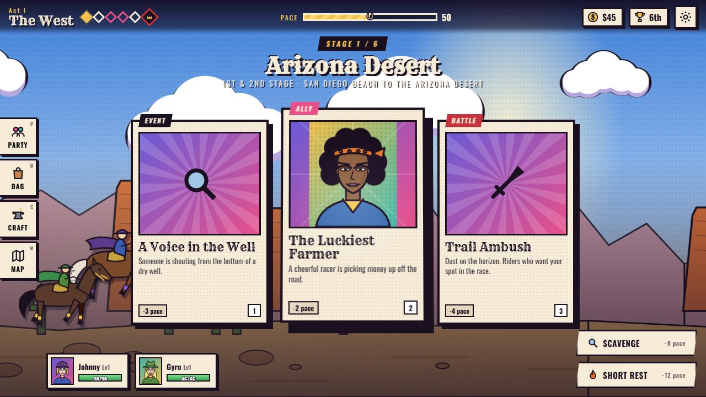
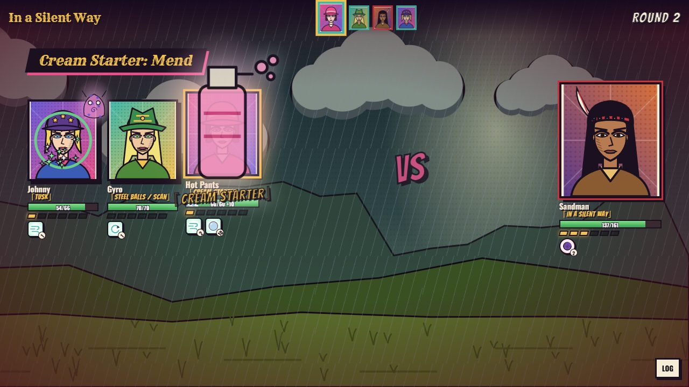
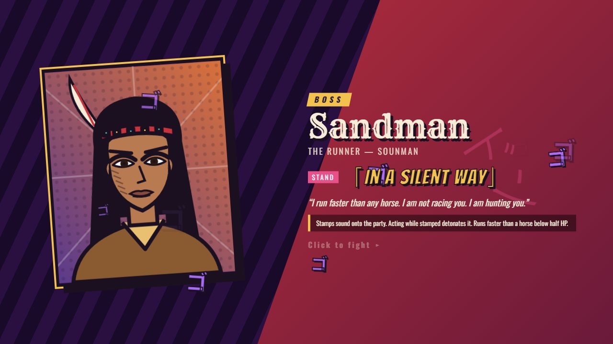
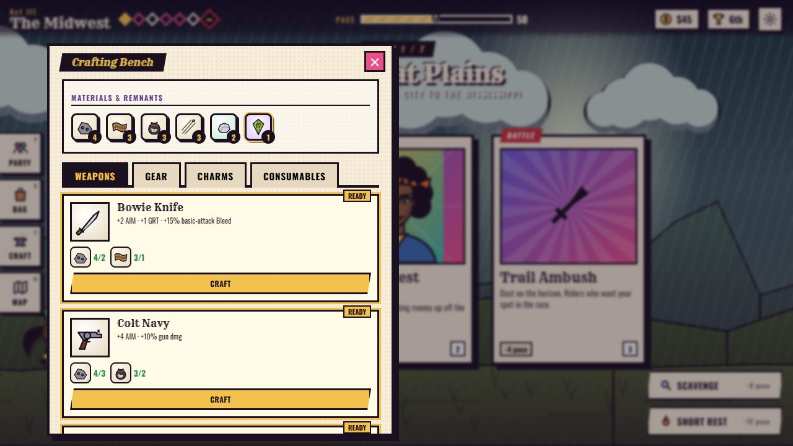
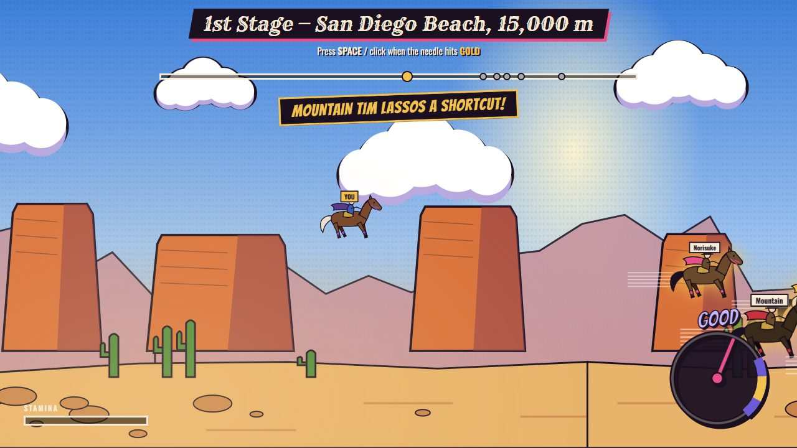
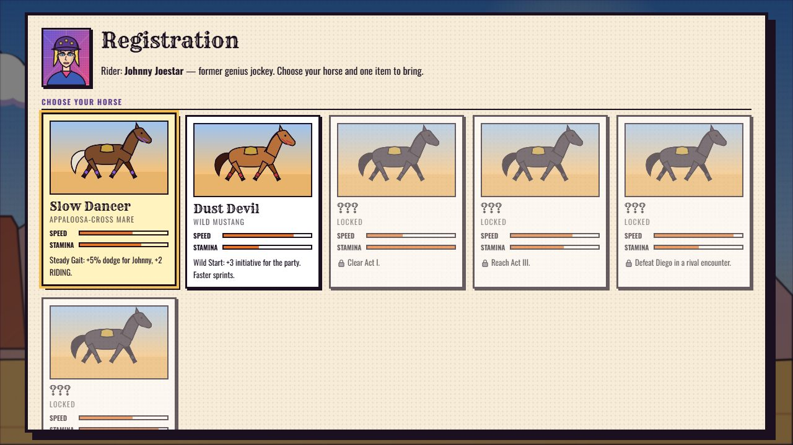

A browser roguelite that follows the Steel Ball Run race from San Diego to New York. Pick a horse and a starting item, ride as Johnny Joestar, recruit Gyro and the others, and fight the President's Stand users with turn-based energy combat. The structure is modelled on An Average Campaign. All art is drawn in code and every sound is synthesized.
Each act is one leg of the race. At every stage you draw three encounter cards and pick one: a fight, a shop, a dice-roll event, a trainer, an ally, or a story beat. Every act ends with a Stand-user boss and a sprint to the finish line, where your pace and your timing decide your standing.






Mrs. Robinson, Mountain Tim, and Tusk awakening against the Tomb of the Boom.
Oyecomova, the Zombie Horse, the Left Arm, Pork Pie Hat Kid, and Dr. Ferdinand.
Hot Pants, Ringo's Mandom, Blackmore's rain, and Sandman by the Mississippi.
Sugar Mountain, Tattoo You!, Wekapipo and Magent Magent, then Axl RO's Civil War.
D-I-S-C-O, Mike O., and Valentine's D4C, ending in the Love Train showdown.
A Diego from another world with THE WORLD. Finish 1st overall for the true ending.
| An Average Campaign | The Corpse Road |
|---|---|
| Races & classes | A horse (speed, stamina, perk) plus one starting item |
| Areas & stages | Six acts that follow the SBR race legs, each ending in a boss and a sprint |
| Encounter cards | Pick one of three, or Scavenge or take a Short Rest; d20 skill checks on stats |
| Materials & Souls | Materials from drop tables, and Stand Remnants from elites and bosses |
| Crafting & equipment | 44 weapons, gear and charms, plus craftable consumables; 3 slots per rider |
| Boons | Techniques, bought with Race Points and equipped in 5 slots |
| Multiplayer party | Story allies you control (up to 4 active), who join and leave with the plot |